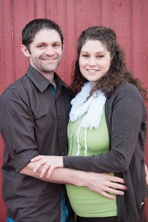

A Brief Description of Me
I am a BYU student receiving a master's degree in civil and environmental engineering and I love it there. I have learned so much during my educational career there about engineering and about life. Being a BYU student has made me a better engineer, writer, father, husband, and person.
I love water! I am focusing my studies of civil engineering in water resources. This includes water transportation engineering, water treatment facility design, water storage and water quality studies, sediment and contaminant transportation, and anything else that has to do with water resources. The picture here shows the Burrones Dam near Guanajuato Mexico. I did a study abroad there and studied the watershed area which feeds that dam.

A big part of water resource engineering is the use of GIS based applications to create models of how water may flow in channels, on the surface, or underground. I love studying GIS technology and writing programs and applications to do new things, especially in an online environment. My thesis research included a study of current virtual globe technology and an implementation of these virtual globes for GIS processing in a cloud environment.

This is a picture of my wife and me. We have been married for about 8 years and have been through a lot together. I love my wife because no matter what she always sticks with me through anything.

These are my two boys, Jackson and James. They are way cute and way funny. Their favorite superhero is Batman. They love to wrestle and play a lot. Jackson loves to read Dr. Seuss books to James and James loves to listen.

We are a happy family and have a lot of fun together every day. Thanks for visiting my site.